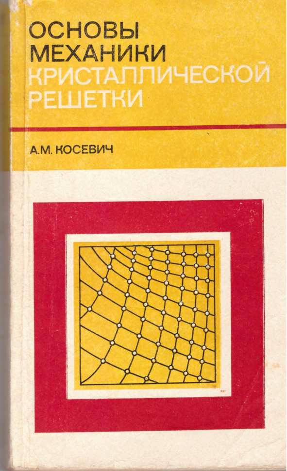
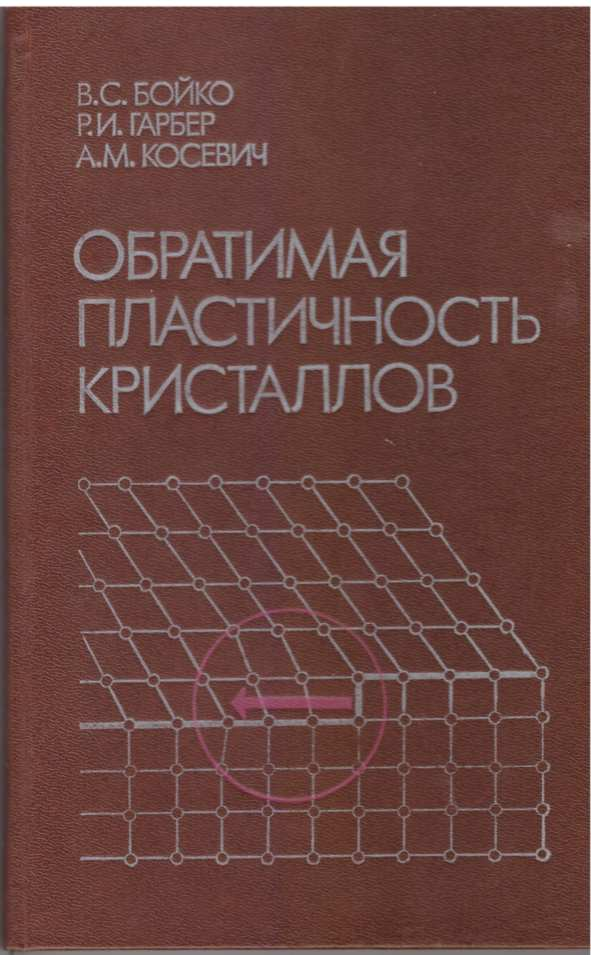
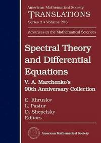
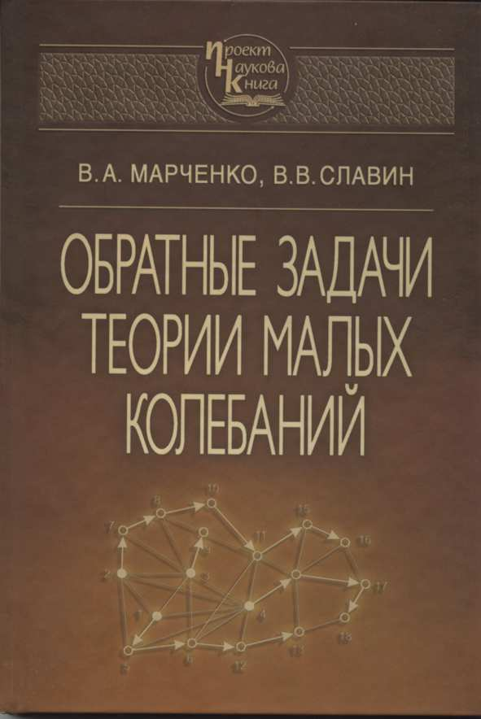

А.М. Косевич
Основы механики кристаллической решетки
Москва: "Наука", 280 с., 1972.
А.М. Косевич
Дислокации в теории упругости
Киев: "Наукова думка", 220 с., 1978.
А. М. Косевич
Физическая механика реальных кристаллов
Киев: "Наукова думка", 328 с., 1981.
И.М. Лифшиц, С.А. Гредескул, Л.А. Пастур
Введение в теорию неупорядоченных систем
Москва: "Наука", 360 с., 1982.

А.М. Косевич, Б.А. Иванов, А.С. Ковалев
Нелинейные волны намагниченности.
Динамические и топологические солитоны
Киев: "Наукова думка", 189 с., 1983.
М.И. Каганов, А.А. Слуцкин
Магнитный пробой
Москва: "Знание", 63 с., 1985.
I.M. Lifshits, S.A. Gredeskul, L.A. Pastur
Introduction to the Theory of Disordered Systems
Wiley, New York, ISBN-13: 978-0471875338, 462 p., 1988.
А.М. Косевич
Теория кристаллической решетки (физическая механика
кристаллов)
Киев: "Вища школа", ISBN 5-11-000653-9, 304 с., 1988.
А.М. Косевич, А.С. Ковалев
Введение в нелинейную физическую механику
Киев: "Наукова думка", ISBN: 5-12-000865-8, 304 с., 1989.
В.Б. Шикин, Ю.П. Монарха
Двумерные заряженные системы в гелии
Москва: "Наука", ISBN: 5-02-014224-7, 156 с., 1989.

В.С. Бойко, Р.И. Гарбер, А.М. Косевич
Обратимая пластичность кристаллов
Москва: "Наука", ISBN: 5-02-014170-4, 280 с., 1991.
Ю.П. Благой, В.Л. Галкин, Г.О. Гладченко,
С.В. Корнилова, В.А. Сорокин, А.Г. Шкорбатов
Металлокомплексы нуклеиновых кислот в растворах
Киев: "Наукова думка", ISBN: 5-12-002499-0, 272 c., 1991.
L. Pastur, A. Figotin
Spectra of Random and Almost-Periodic Operators
Springer, ISBN 978-3-642-74348-1, 587 p., 1992.
V.S. Boyko, R.I. Garber, A.M. Kossevich
Reversible Crystal Plasticity
Springer, ISBN 978-0-88318-869-9, 294 p., 1994.
A.M. Kosewicz
Mechanika Fizyczna Nieidealnych Krystalicznych Cial Stalych
Wydawnictwo Universytetu Wroclawskiego,
ISBN 83-229-2095-4, 388 p., 2000.
Magnetoelectric Interaction Phenomena in Crystals
Edited by M. Fiebig, V.V. Eremenko, I.E. Chupis
Kluwer, ISBN: 1-4020-2388-X, 334 p. 2003.
Y. Monarkha, K. Kono
Two-Dimensional Coulomb Liquids and Solids
Springer, ISBN 978-3-662-10639-6, 350 p., 2004.
A.M. Kosevich
The Crystal Lattice. Phonons, Solitons, Dislocations, Superlattices
Wiley, New York, ISBN: 978-3-527-40508-4, 356 p., 2005.
А.М. Косевич
Механіка кристалічної ґратки
Харьков: "Акта", ISBN 966-7021-97-1, 305 c., 2006.
А.Г. Шкорбатов
Метод парциальных волновых функций и структура временного
интервала между последовательными квантовыми переходами
Харьков: "Факт", ISBN 966-637-520-6, 64 с., 2006.
В.М. Кошкин, И.В. Синельник, А.Г. Шкорбатов
Введение в естествознание. Программа-путеводитель
Харьков: "Факт", ISBN 966-637-436-6, 152 с., 2006.
L. Pastur, M. Shcherbina
Eigenvalue Distribution of Large Random Matrices
American Mathematical Society, ISBN: 978-0-8218-5285-9,
632 p., 2011.

E. Khruslov, L. Pastur, D. Shepelsky
Spectral Theory and Differential Equations
American Mathematical Society,
ISBN: 978-1-4704-1683-6, 251 p., 2014.

В.А. Марченко, В.В. Славин
Обратные задачи теории малых колебаний
Киев: "Наукова думка", ISBN 978-966-00-1484-8,
219 c., 2015.
А.А. Мамалуй, Е.С. Сыркин, Т.Н. Шелест и др
Вакансии в низкоразмерных кристаллических системах
Харьков: "ФОП Панов А.Н.",
ISBN 978-617-7293-68-1, 268 c., 2016.
А.И. Копелиович, Е.А. Любченко
Теоретическая физика. Текст лекций
Харьков: НТУ "ХПИ", ISBN 978-617-05-0197-4, 199 с., 2016.
V.A. Marchenko, V.V. Slavin
Inverse Problems in the Theory of Small Oscillations
American Mathematical Society, ISBN: 978-1-4704-4890-5,
158 p. 2018.
Д.В. Филь, С.И. Шевченко
Электрон-дырочная сверхпроводимость, 2018.
Харьков: 2018.